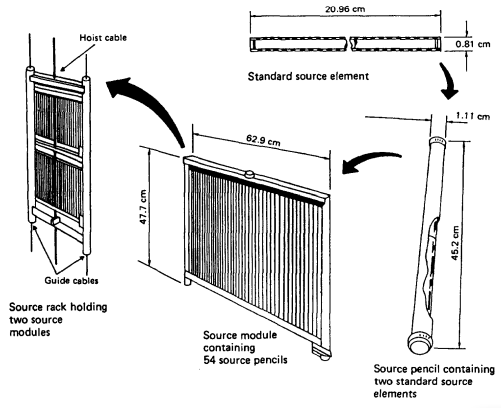

Instalación
La instalación de irradiación
El accidente ocurrió en una instalación industrial de irradiación cerca de San Salvador, construida en 1974 y operativa desde 1975, equipada con un esterilizador gamma JS6300 que utiliza cobalto-60 como fuente radiactiva. Los productos se esterilizan moviendo cajas alrededor de un bastidor vertical que contiene la fuente, la cual está protegida por una piscina de agua cuando no está en uso.
El irradiador inicialmente tenía una carga de 4,0 PBq de cobalto-60, que decayó a 0,66 PBq para el momento del accidente en 1989, y nunca fue recargada debido a problemas económicos y la guerra civil.La planta cambió de propiedad varias veces, y la capacitación formal de operadores terminó después de 1975, pasando a ser informal y verbal.
Un incidente previo en 1975 causó daño al bastidor, pero se reparó sin exposiciones. Sin embargo, la guerra y la inseguridad impidieron la recarga de la fuente y la realización de auditorías de seguridad radiológica durante 14 años.
La Fuente Radiactiva
El cobalto-60 metálico es la fuente de radiación del esterilizador gamma JS6300. Los elementos radiactivos están encapsulados dos veces en lápices de acero inoxidable de unos 45 cm de largo, con tapas sólidas de aproximadamente 1 cm de diámetro
Fig 1: El bastidor de la fuente con dos módulos de fuente, cada uno conteniendo hasta 54 lápices de fuente, con dos elementos estándar de fuente en cada lápiz.(Por cortesía de Nordion International Inc.)
.png)
Fig 2: Diagrama en sección transversal del bastidor de la fuente, el mecanismo de elevación y el mecanismo de transporte.(Por cortesía de Nordion International Inc.)
Cada módulo de fuente contenía 14 lápices activos de cobalto-60 y 40 lápices inactivos (varillas de acero inoxidable), todos asegurados en canales superiores e inferiores. Dos módulos se apilaban verticalmente en un bastidor para lograr una distribución uniforme de la radiación sobre un área de 0,60 m por 0,90 m. La radiactividad inicial en 1975 era de 4,0 PBq, que decayó a 0,66 PBq para febrero de 1989, fecha del accidente.
EL MECANISMO DE ELEVACIÓN DE LA FUENTE
El bastidor de la fuente se guarda en una piscina de agua de 5,5 m de profundidad cuando no está en uso. Para la irradiación, un polipasto neumático en el techo eleva el bastidor a su posición de trabajo, guiado por cables tensos a cada lado. Al estar arriba, activa un microinterruptor que indica su posición. Cuando se libera el aire, el bastidor baja por gravedad a la piscina, desactivando otro microinterruptor que señala que está en posición segura
EL MECANISMO DE TRANSPORTE DE PRODUCTOS
En el irradiador JS6300, los productos se colocan en cajas de fibra de vidrio que se transportan en bandejas de acero inoxidable a través de 29 posiciones de irradiación, movidas por pistones. Estas se desplazan en cuatro filas distribuidas en dos niveles, utilizando un elevador neumático para pasar del nivel inferior al superior. Guías metálicas aseguran su trayectoria y protegen el bastidor de la fuente. Sensores de posición controlan el movimiento. El tiempo de exposición en cada posición que para el 5 de febrero de 1989 era de 140 minutos está regulado por un temporizador maestro.
.png)
Fig 3:Plano de los dos niveles del mecanismo de transporte del irradiador JS6300.(Por cortesía de Nordion International Inc.)
.png)
Fig 4;Diagrama esquemático del transporte de las cajas de producto en el irradiador.(Por cortesía de Nordion International Inc.)
Cuando el temporizador maestro finaliza, se activa un movimiento secuencial de pistones que avanza cada caja una posición y expulsa una caja procesada fuera del irradiador. Entre 1975 y 1981 ocurrieron varios incidentes en irradiadores similares, donde cajas dañadas bloquearon el bastidor de la fuente. En 1981, el proveedor recomendó instalar una cubierta de acero y revisar regularmente el estado de las cajas. Aunque el propietario recibió este aviso, no aplicó las recomendaciones por razones de costo y eficiencia. Para 1989, muchas cajas estaban en mal estado, incluso reparadas con cinta adhesiva, lo que comprometía gravemente la seguridad.
SISTEMAS DE BLOQUEO DE SEGURIDAD Y CONTROL DE ACCESO
El panel de control
El panel de control del irradiador incluía interruptores de llave, luces indicadoras, un temporizador maestro, un temporizador de sobredosificación y un contador de ciclos. Aunque originalmente tenía leyendas iluminadas, al momento del accidente no había marcas visibles que identificaran los controles o luces, lo que dificultaba su interpretación. A pesar de esto, los operadores conocían sus funciones. Además, la presencia de una claraboya complicaba la visibilidad de las luces de advertencia durante el día, lo que representaba otro riesgo operativo.
Monitoreo de radiación
El monitor de radiación LI 18 está conectado a la puerta de acceso para impedir la entrada si hay radiación anormal cuando la fuente debería estar almacenada. Se encuentra instalado en la pared de la sala de radiación y utiliza nueve tubos Geiger-Müller para detectar niveles de radiación con alta sensibilidad. Está calibrado para activar una alarma ante tasas de exposición desde aproximadamente 8 veces la radiación natural de fondo hasta más de 10,000 Sv/h.
.png)
Fig 5:Panel de control del irradiador JS6300. (Por cortesía de Nordion International Inc.)
.png)
Fig 6:Sistema monitor de sonda única LI 18 montado en la pared. (Por cortesía de Nordion International Inc.)
.png)
Fig 7:Diagrama esquemático de los circuitos del monitor en la sala de radiación. (Por cortesía de Nordion International Inc.)
El monitor de radiación LI 18 estaba diseñado para impedir el acceso a la sala si había radiación anormal o si la fuente no estaba completamente almacenada. Para entrar, el operador debía presionar un botón de prueba que simulaba una alarma con la radiación de fondo; si el monitor ya estaba en alarma, la prueba no podía realizarse. Una vez soltado el botón, debía confirmarse que la radiación era normal antes de habilitar la cerradura eléctrica de la puerta.
Sin embargo, más de cinco años antes del accidente, la sonda del monitor falló y fue retirada, lo que debía haber deshabilitado el sistema. En cambio, se descubrió que era posible burlar el sistema usando una combinación de botones en el panel del monitor. Este método se convirtió en el procedimiento habitual
Además, la puerta de acceso estaba en mal estado y mal ajustada, permitiendo abrirla a la fuerza o con una herramienta simple como un cuchillo. Todo esto resultó en la anulación efectiva de un sistema de seguridad clave del irradiador.
Funciones automáticas de seguridad
El esterilizador gamma JS6300 contaba con funciones automáticas de seguridad, como interbloqueos que impedían levantar la fuente radiactiva sin que se cumplieran ciertos pasos de seguridad: el operador debía entrar a la sala, accionar un interruptor y cerrar la puerta. Si la puerta se abría a la fuerza con la fuente arriba, un microinterruptor bajaba automáticamente la fuente.
n interruptor con retardo de tiempo exigía que el operador inspeccionara la sala antes de iniciar la irradiación, dándole 90 segundos para salir. Sin embargo, por los frecuentes cortes de energía, este sistema fue modificado indebidamente, ubicando el interruptor en el panel de control, eliminando así la necesidad de que el operador ingresara físicamente a verificar la sala.
La puerta podía abrirse desde dentro para evitar que alguien quedara atrapado. Además, un cable de emergencia podía detener la operación y bajar la fuente.
El irradiador se apagaba y la fuente bajaba ante fallas o activación de sistemas de seguridad, con una luz roja y una alarma de tránsito. Las causas posibles incluían pérdida de presión de aire, calor excesivo, fallos mecánicos, cortes eléctricos o fin del tiempo del temporizador de sobredosis, que debía activarse cinco minutos después del temporizador maestro.
Controles administrativos
Además de los sistemas automáticos de seguridad, debían existir controles administrativos para garantizar que solo operadores capacitados y autorizados usaran la instalación según el manual.
La operación requería una llave única, la cual debía tener siempre unido un monitor portátil de radiación, para evitar el ingreso a la sala sin protección. Este monitor debía comprobarse antes de cada ingreso con una fuente de prueba instalada en la cerradura de la puerta.
Sin embargo, no se usaba el monitor portátil, no estaba unido a la llave, y nadie sabía dónde estaba la fuente de prueba. Además, hay dudas sobre si el monitor se usaba correctamente o si se usaba en absoluto. Esto evidencia fallas graves en los procedimientos de seguridad operativa.